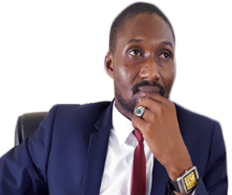
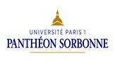
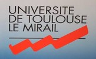
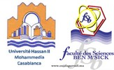
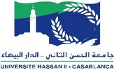
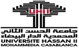
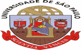

Les 4 facultés
Les 4 facultésUGLC-SC / Université / International
Une université ouverte sur le monde
Le RECUST : coopération scientifique, mobilité académique et partenariats internationaux, depuis 2001.
Le RECUST, depuis 2018

Sory Sidibé
Directeur des Relations Extérieures et de la Coopération Internationale (RECUST)Depuis le début de l'année 2018, Sory Sidibé dirige le Service des Relations Extérieures et de la Coopération Universitaire Scientifique et Technique — le RECUST. Sa feuille de route a été claire dès le premier jour : redynamiser les accords de coopération tombés en sommeil, et en ouvrir de nouveaux, avec des universités africaines, européennes, asiatiques et américaines.
C'est dans ce cadre qu'il a organisé, dès sa prise de fonction, l'invitation de trente universitaires pour l'année académique 2018-2019 — un signal fort de la volonté d'internationalisation de l'UGLC-SC. Ces mobilités d'enseignants-chercheurs ont marqué le début d'une nouvelle ère : celle d'un espace collaboratif interuniversitaire construit notamment avec l'Université Paris 1 Panthéon-Sorbonne et la direction de la Coopération Universitaire de l'Ambassade de France.
L'UGLC-SC est point focal d'une Chaire UNESCO consacrée aux défis partagés du développement, en réseau avec le programme ResaDys et en coopération avec l'IEDES depuis 2010.
Ce que fait le RECUST
Créé par l'Arrêté N°2001-54/MESRS/CAB du 30 novembre 2001, ce service placé sous l'autorité directe du Recteur couvre un champ de missions large.
Accords de coopération
Élaboration et suivi des protocoles de coopération scientifique et technique avec les partenaires internationaux.
Mobilité académique
Information et accompagnement des enseignants-chercheurs et étudiants pour optimiser leurs échanges.
Accueil des missions
Organisation de l’accueil et de l’installation des délégations, experts et invités de marque de l’université.
Étudiants étrangers
Gestion administrative des étudiants internationaux inscrits à l’UGLC-SC.
Formalités consulaires
Appui logistique et consulaire pour les experts et missionnaires en lien avec le Ministère.
Stages & emplois
Centralisation des offres de stage et d’emploi, et mise en relation avec les entreprises partenaires.
Deux sections, un secrétariat
Section Relations Publiques et Accueil
Organise la réception des délégations étrangères et veille à la sécurité et à l'entretien des logements affectés aux experts et invités de marque.
Section Relations Interinstitutionnelles
Sert d'interface entre l'université et ses partenaires au développement, en Guinée comme à l'international.
Principaux accords de coopération
Educology Research Associated (États-Unis)
Université de Franche-Comté
Université Toulouse Le Mirail
Université Robert Schuman de Strasbourg
Université Paris 1 Panthéon-Sorbonne
Université Cheikh Anta Diop de Dakar
Université Stendhal Grenoble
Institut de Recherche Interdisciplinaire — Université de São Paulo
Université Hassan II de Mohammedia-Casablanca
UNICEF
Université Barack Obama





